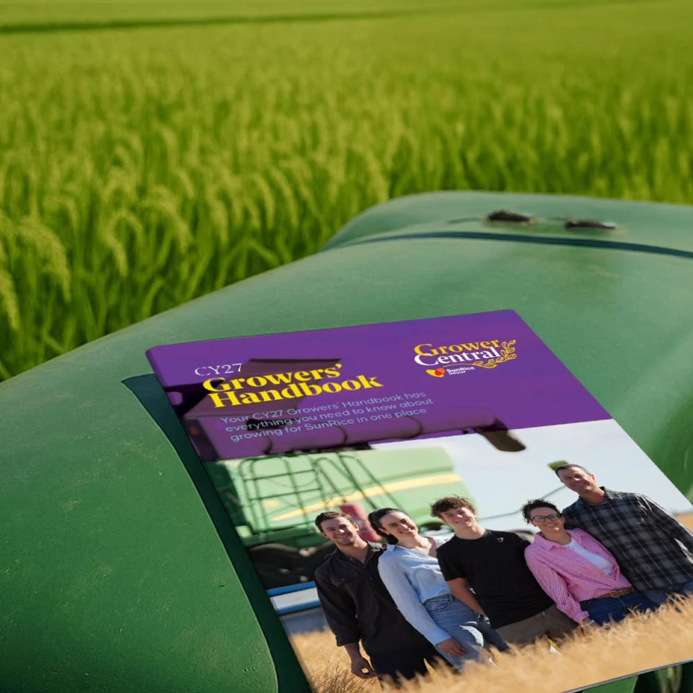
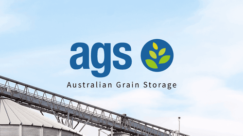
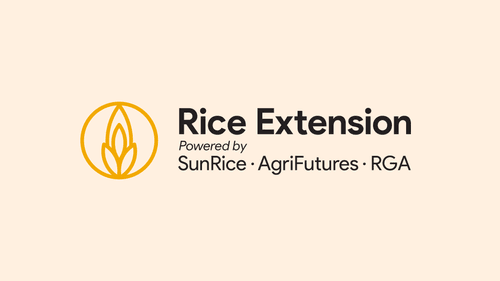
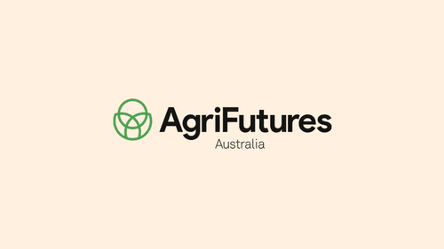
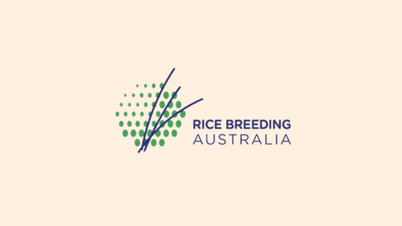
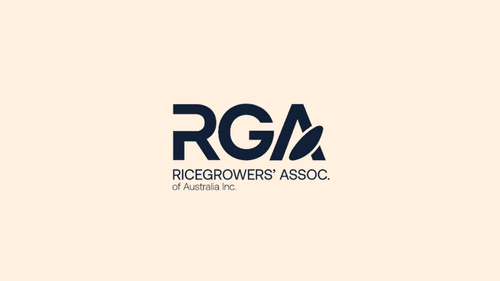

Grower Central
Documents and Forms
Find the current season handbook, contracts and guides, along with harvest and Grower Portal resources.

Document library
Guides, contracts and forms
The CY27 handbook covers the contract offer, quality specifications and discounts, food safety, harvest equipment cleaning and Chain of Responsibility.
26 documents
Pinned documents4
CY27 resources2
Products and services for growers6
- PDFPaddyPay FAQ439 KB (PDF, opens in a new tab)
- PDFCY26 SunRice Insurance Policy3.4 MB (PDF, opens in a new tab)
- PDFHow to request a Contract on the Grower Portal CY27 (help guide)722 KB (PDF, opens in a new tab)
- PDFHints and Tips using the SunRice Growers Portal (help guide)1.2 MB (PDF, opens in a new tab)
- PDFGrower Portal SMS Authentication User Guide1.3 MB (PDF, opens in a new tab)
- PDFSunRice Growers Portal Terms & Conditions102 KB (PDF, opens in a new tab)
Harvest information for growers and truck drivers11
- PDFSunRice Pre Harvest Declaration164 KB (PDF, opens in a new tab)
- PDF2026 Harvest Receival Arrangement129 KB (PDF, opens in a new tab)
- PDFHarvest Equipment Cleaning Procedures126 KB (PDF, opens in a new tab)
- PDFCoR – Heavy vehicle fatigue management – primary producers199 KB (PDF, opens in a new tab)
- PDFCoR – Master Code – Registered Industry Code of Practice876 KB (PDF, opens in a new tab)
- PDFCoR - New South Wales Class 3 Grain Harvest Management Scheme Mass Exemption Notice 2022 (No.1)875 KB (PDF, opens in a new tab)
- PDFCoR – Primary producers and heavy vehicle safety91 KB (PDF, opens in a new tab)
- PDFCoR Tool - NHVR Heavy vehicle daily pre-start check368 KB (PDF, opens in a new tab)
- PDFCoR – Primary producers – Questions and Answers194 KB (PDF, opens in a new tab)
- PDFCoR Tool – Recording local area (160km) driving hours template104 KB (PDF, opens in a new tab)
- PDFCoR Tool – Standard hours, solo driver planner27 KB (PDF, opens in a new tab)
Other documents, forms and information3
No documents match that search. Try a shorter word, or call Grower Services on 1800 654 557.
Industry resources
Resources and links

AGS Harvest Information
Check depot hours, receivals and wait times during harvest.
Visit website (opens in a new tab)
Rice Extension
Find practical guides, research and industry updates for rice growers.
Visit website (opens in a new tab)
AgriFutures Australia
Explore the research and extension projects funded through the Rice Program.
Visit website (opens in a new tab)
Rice Breeding Australia
Learn about rice varieties being developed for Australian conditions and growers.
Visit website (opens in a new tab)
Ricegrowers’ Association of Australia (RGA)
Find out how the RGA represents rice growers and their communities.
Visit website (opens in a new tab)Discover our creations
Explore SunRice products and find recipes for everyday meals.
Visit website (opens in a new tab)